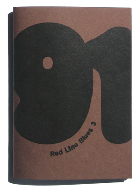

Available now in the online store.
Red Line Blues 3: 1991
Spring 2007
96 pages
4" x 5.5"
Edition of 400
Jen Grossman — Heinz Ketchup and The Cure
Lucy Tobin — 1991
Justina Prenatt — Seeds To Be Sown
Wende Crow — A Place For Everything
Lisa Freedman — Compass
Cheryl Sacra Paden — Going Global
Sylvia A. Wall — Southern Fried Chicken
Matthew Wells — Lest We Forget
Robin MacCurdy — Big Change Coming
Moriah Norris-Hale — Wars
Ben Yanes — Walking Off Minor
Mimi LaValley — Lollipops
Jessie and Jonah Eller-Isaacs — The Fire
Steven Norris — Random Acts of Kindness, Senseless Acts of Beauty
Richard Hansgen — Monastery of the Sisters of Bethlehem
William Hubbard — Marbles
Ken Becker — The Last Punch I Ever Threw
Jaye Bartell — 1991
Paul Dixon — Come Eighteen
Chall Gray — In the Age of New Things
Gabe Johnson — And Crickets